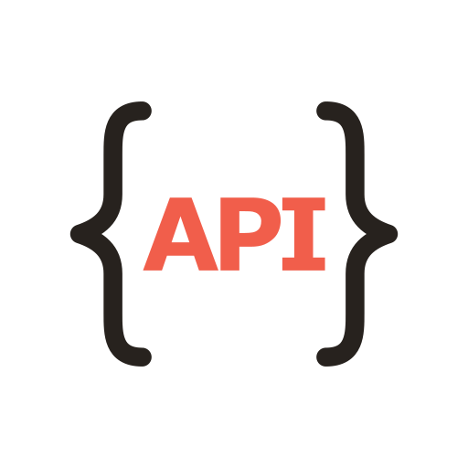
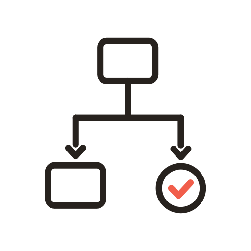

The system behind the research
The most useful thing I have built here is not any single report. It is the way the work is done. The repository holds my working rules, the research and decision logs, and the custom tools that produce and verify the work, all written so a capable AI assistant can read them and act on them directly. I review every decision it takes. The evidence on this site came out of that system, and the system itself sits in the same repository, open for anyone to read.
- Working rules and conventions
- Research and decision logs
- Custom tools
- Project memory
- Research reports
- Learning units
- Custom local tools
The repository read as a system, rather than as a folder of documents.
What large firms do differently
In a large organisation, a model is set up before anyone types a question. It gets the company's own documents to work from. It is wired into the software staff already use, and someone has decided what gets checked by a person before an answer is acted on. Most of the value comes from that preparation, not from the model itself.
A small firm usually gets the chat window with none of the preparation around it. The OECD's case studies point the same way: small firms mostly use generative AI for peripheral rather than core tasks, and of the small and medium firms that use it at all, only 29% report using it in their core activities.
How a large organisation typically deploys AI
- Models work from the organisation's own data

Connected to the systems it already runs
Custom agents for specific jobs, with rules and review
What a small firm usually gets
- A general chat tool, off the shelf
- The same model as everyone else, with none of its own context
- No agreed rules for checking what comes back
Typical patterns rather than universals: the OECD's case studies find small firms at every level of AI maturity.
The direction
The direction I adopted in August 2026 is to close that gap for small organisations and individuals. In practice it means the preparation a large firm does, scaled down: giving the model the right context for each task instead of typing into a blank chat window, and building small tools and workflows around the jobs the organisation actually has. Where it makes sense, those run on the organisation's own machines rather than in the cloud, which matters to a small firm twice over: it cuts the running costs, and the data never leaves the building. It is the pattern large firms already run, scaled to a small one.
That has since become something more specific than a direction. If the preparation is the valuable part, and it works best on the organisation's own hardware, then the thing worth building is the machine that arrives with all of it already done, and with the guidance to teach its own use built in. The workstation page sets out what that is, how far it has got, and the four things about it that are still unproven.

This is a direction, not a finished product. Whether small organisations want this, and what they would pay for, is an open question, and the log records it as one.